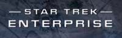
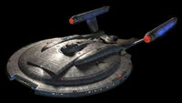
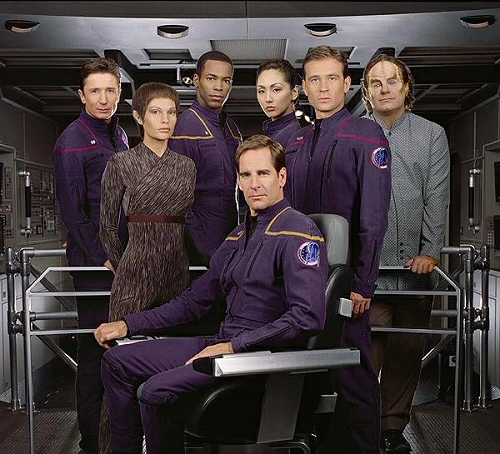

Star Trek: Enterprise
| Star Trek: Enterprise | |
|---|---|
|  | |
| Abreviatura | ENT |
| Creadores |
Rick Berman Brannon Braga |
| Estudio | Paramount Pictures |
| Fechas de producción | 2001–2005 |
| Periodo de emisión | 26 Septiembre 2001 - 13 Mayo 2005 |
| Episodios | 97 (4 Temporadas), Uno es episodio doble (Como fin y comienzo de temporada) |
| Fragmento temporal | 2151-2155, 2161 |
|  | |
|
Enterprise |
|
|  | |
|
La tripulación en la Primera Temporada. |
|
| Sumario |
|---|
| 1. Historia |
| 2. Producción |
| 3. Personajes |
Historia
La historia transcurre a mediados del siglo XXII, cerca de 90 años después del primer vuelo warp terrestre y unos 100 años
antes de la época de James T. Kirk.
La Federación todavía no existe como tal y apenas comienzan los primeros contactos --no todos diplomáticos-- con las razas
extrañas del sector cercano. Son los días de los pioneros de la exploración espacial profunda. Es una época de constantes
descubrimientos para los exploradores de la Tierra.
Descubrimientos que se incrementarán notablemente con la salida de los astilleros de un prototipo de nave con capacidad de
warp 5, increíblemente más veloz que sus antecesoras, y que tomó cerca de 40 años desarrollar.
La nave es el NX-01 y fue bautizada como Enterprise. Su tripulación tendrá más que nunca la misión de explorar nuevos mundos
y descubrir nuevas formas de vida y nuevas civilizaciones, en definitiva, viajar temerariamente donde nadie ha llegado antes.
A su paso encontrará nuevos amigos, pero también encontrará muchos peligrosos adversarios, representados por klingons, andorianos
--tienen una larga disputa con los vulcanos--, romulanos y los Sulliban, una raza que usa manipulación genética, que estará
asociada a un extraño y misterioso villano proveniente del futuro.
Producción
En mayo de 2000, Rick Berman, productor ejecutivo de Star Trek: Voyager, reveló que una nueva serie se estrenaría luego de la temporada
final de Voyager. Pocas noticias aparecieron durante los sucesivos meses mientras Berman y Brannon Braga desarrollaban la serie, conocida
como Series V, hasta febrero del 2001, cuando Paramount firmó con Herman Zimmerman y John Eaves para diseño de producción. En un mes, el
diseñador escénico Michael Okuda, otro veterano de Star Trek, también se unió. Michael Westmore, diseñador de maquillaje desde Star Trek:
The Next Generation, fue anunciado para finales de abril. Como director de fotografía regresó Marvin V. Rush, quién trabajaba en la franquicia
desde la tercera temporada de la nueva generación. Para efectos visuales, llegó Ronald B. Moore, quién trabajó previamente en Voyager.
Sin embargo, la gran noticia no se conocería hasta el 11 de mayo de 2001, cuando se reveló que el título de Serie V sería Enterprise, con
Scott Bakula (Quantum Leap) interpretando al capitán Jonathan Archer. Cuatro días más tarde, el resto del reparto sería anunciado, sin informar
el nombre de los personajes hasta el día siguiente.
El 14 de mayo de 2001, comenzó la filmación del episodio piloto "Broken Bow", en los estudios 8, 9 y 18 de Paramount Studios. Tres días más tarde,
Tom Nunan (productor de entretenimiento de UPN), ofreció una conferencia de prensa anunciando al mundo Enterprise con un video sobre la historia
de la franquicia de Star Trek.
El 26 de septiembre de 2001, se produjo el estreno de Enterprise transmitida por UPN con una audiencia estimada de 12,54 millones de televidentes.
A lo largo de la serie, Star Trek: Enterprise marcó varios hitos en la producción de una serie de televisión de la franquicia. Fue la primera serie
de Star Trek en poseer formato widescreen, también la primera en ser emitida en HDTV, comenzando el 15 de octubre de 2003, a mitad de la tercera
temporada, además de ser la primera en ser filmada en video digital en su cuarta temporada, y fue el primer programa de ciencia ficción en la historia
de la televisión en usar imágenes tomadas en otro planeta (el vehículo de exploración Sojourner aproximándose a la Roca Yogi, las imágenes fueron
tomadas por el Mars Pathfinder y usadas en los créditos iniciales).
Varios episodios de Enterprise fueron dirigidos por actores de otras series de Star Trek: LeVar Burton de la nueva generación dirigió nueve episodios,
Michael Dorn de la nueva generación y espacio profundo nueve dirigió uno, y Roxann Dawson y Robert Duncan McNeill de Voyager dirigieron diez y cuatro
episodios respectivamente.
Personajes
- Scott Bakula como Capitán Jonathan Archer
- Jolene Blalock como Sub Comandante T'Pol
- John Billingsley como Doctor Phlox
- Linda Park como Alferez Hoshi Sato
- Anthony Montgomery como Alferez Travis Mayweather
- Dominic Keating como Teniente Malcolm Reed
- Connor Trinneer como Comandante Charles Tucker III